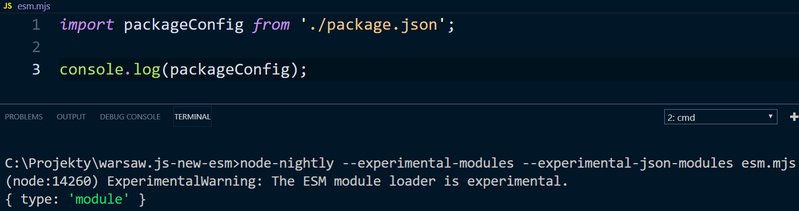

We talk about JavaScript. Each month in Warsaw, Poland.
<script type=”module">
import {meetup, workshop} from './warsaw.mjs';
export const events = [meetup.getNextEvent(), workshop.getNextEvent()];
Od października 2017 wraz z wersją LTS 8.9.0 roku mamy eksperymentalne wsparcie modułów ECMAScript za flagą --expermintal-modules
1 lutego 2018 została utworzona dedykowana grupa robocza której celem było dostarczenie pełnego wsparcia dla modułów ES w Node.js
Ich praca doprowadziła do utworzenia road mapy dla implementacji modułów ES w Node.js
Tak jak w poprzedniej wersji flaga --experimental-modules dodaje wsparcie do Node.js, dla następujących elementów:
Cztery typy specyfikatorów używanych w instrukcjach import,export from i dynamicznych
wyrażeniach import()
import { event } from './meetup.mjs'
import { event } from 'file://opt/app/meetup.mjs'
import { event } from 'es-module-package'
import { event } from 'es-module-package/lib/file.mjs'
Instrukcja import, odwołująca się do pliku modułu ECMASCript, może określić zarówno:
import _ from './meetup.mjs'
import { shuffle } from 'es-module-package'
import * as fs from 'fs'
Wszystkie wbudowane moduły Node.js jak fs czy path obsługują wszystkie trzy typy eksportu.
Instrukcje import odwołujące się do pliku CommonJS mogą używać tylko domyślnego ekportu
import _ from 'commonjs-package'To jest w toku i może się zmienić w przyszłości.
Dynamiczne wyrażenie import() może być używane do importowania modułów ES
z plików modułu CommonJS lub ES
(async () => {
// Załaduj moduł ECMASCript
const meetupES = await import('./meetup.mjs');
console.log(meetupES.default.name);
// Załaduj moduł CommonJS
const meetupCJS = await import('./meetup.js');
console.log(meetupCJS.default.name);
})();
import.meta.url dostarcza adres URL bieżącego modułu ES
console.log(import.meta.url);
// Wynik => file:///C:/Projekty/warsaw.js-new-esm/index.mjs
Moduły ECMASCript ładowane są w trybie ścisłym, gdzie CommonJS wymaga
dodania dyrektywy “use strict”
Pliki kończące się na .mjs są jawnie traktowane jako moduły ECMASCript w instrukcjach importu i podczas uruchamiania za pomocą komendy node.
Nowa implementacja modułów ES umożliwia nam to poprzez pole type w pliku package.json.
Dodaj "type": "module" do pliku package.json dla swojego projektu a Node.js
będzie traktował wszystkie pliki js w Twoim projekcie jako moduły ECMAScript.
Jeżeli część Twoich plików używa CommonJS i nie jesteś w stanie przepisać wszystkich naraz, masz dwa wyjścia:
"type":"commonjs" pod którym wszystkie pliki js będą traktowane jak
CommonJS
Nowe rozszerzenie pliku .cjs jawnie oznacza, że plik powinien być traktowany jako CommonJS.
Domyślnie w nowej implementacji modułów rozszerzenia plików są obowiązkowe w instrukcjach importu:
import './file.js', zamiast import './file'A mając katalog config/index.js:
import './config/index.js', zamiast import './config'Ale, możemy zmienić to zachowanie korzystając z ...
Flaga --es-module-specifier-resolution=node
Flaga włącza zachowanie automatycznego rozszerzania w stylu CommonJS, dzięki czemu poniższy kod jest poprawny.
import './file'import './config' - gdzie config jest katalogiem z plikiem index.js
Poprzednia implementacja pozwalała używać instrukcji import względem plików
JSON i natywnych modułów. Ta funkcjonalność została zdjęta. Aby
zaimportować te typu plików w module ECMASCript można użyć:
module.createRequireFromPath()
Użycie plików CommonJS, JSON oraz natywnych modułów po przez
module.createRequireFromPath()
import { createRequireFromPath as createRequire } from 'module';
import { fileURLToPath as fromURL } from 'url';
const require = createRequire(fromURL(import.meta.url));
const packageConfig = require('./package.json');
console.log(packageConfig); // { type: 'module' }
//
Użycie flagi --experimental-json-modules
To jest praca w toku i może ulec zmianie.
Możemy utworzyć pakiet zawierający pliki ECMASCript, używając pola "main" w pliku package.json.
Node.js będzie wiedział, jak załadować go jako moduł ECMASCript,
jeśli plik kończy się na .mjs lub jeśli package.json
zawiera także "type": "module"